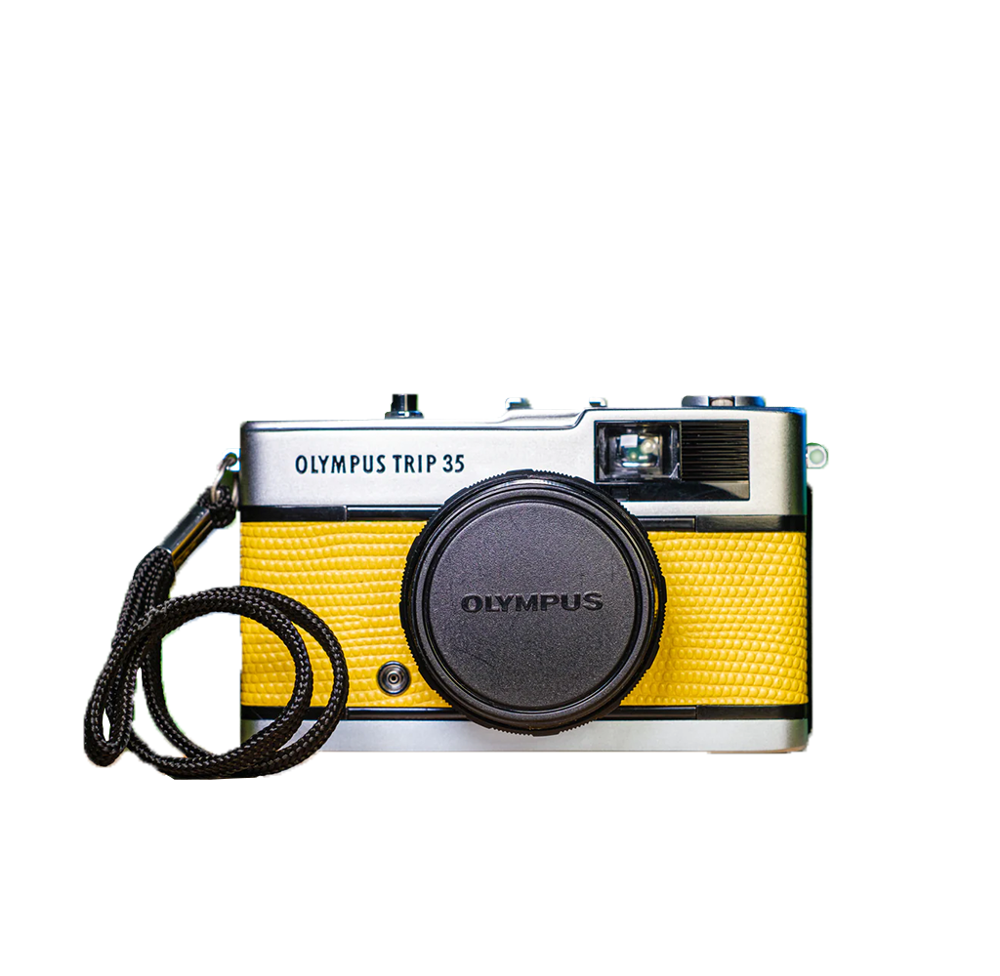
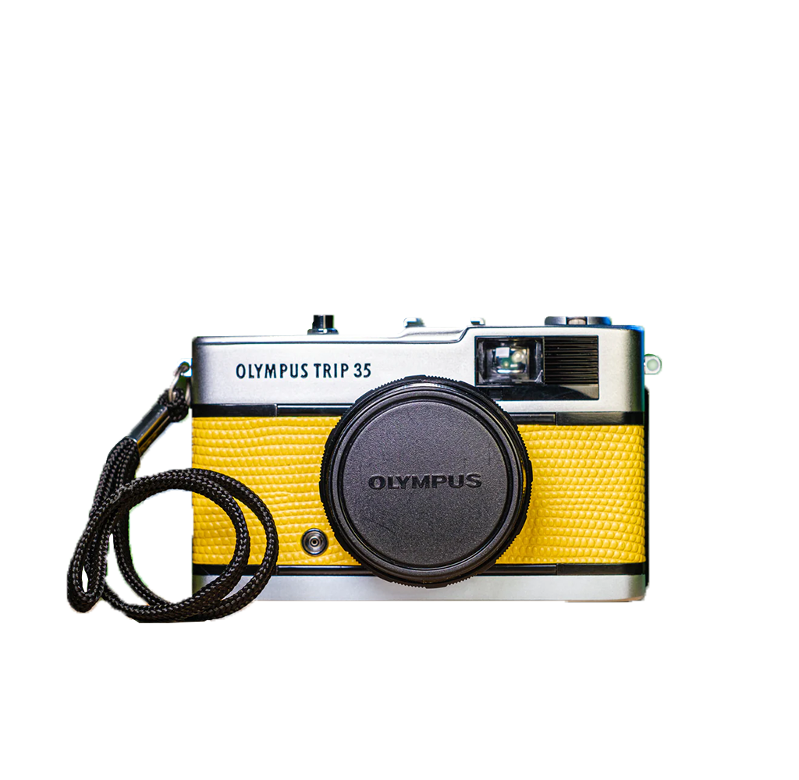

Information
Film Formats
35mm: Commonly used for amateur and professional photography.
Medium Format: Larger than 35mm, used in professional and high-quality applications.
Large Format: Even larger, often used for studio or landscape photography.
ISO Sensitivity
Film speed is the measure of a photographic film's sensitivity to light, determined
by sensitometry and measured on various numerical scales,
the most recent being the ISO system
introduced
in 1974. A closely related system,
also known as ISO, is used to describe the relationship between
exposure and output image
lightness
in
digital
cameras. Prior to ISO, the most common systems were ASA in the U.S. and DIN in Europe.

 
